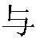
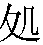

捭啓 一昨日御頒

の『東方の詩』をいただいて御蔭樣ですわって色々な
に旅行することが出來ました。厚く御礼を申し上げます。蘭の話と云へば料理屋に集まった有樣もあリあリと目の前に浮出します。併し今の上海はあの時と大に变ってどうもさびしくてたまリません。
魯迅 上 三月十七日
森三千代女士几下
[译文]
拜启：前天拜领了惠赠的《东方之诗》[115]。托你的福，我坐着便能旅游种种地方。谢谢你的厚礼。说到兰花的话，在饭店聚会的情形还历历如在眼前。但是，如今的上海与当年已大不一样了，实在凄凉得可怕。
鲁迅 上 三月十七日
森三千代女士几下
注 释
[114] 森三千代（1905—1977），日本女诗人。金子光晴之妻。鲁迅1934年3月12日日记：“午后得《东方の詩》一本，著者森女士寄赠。”
[115] 《东方之诗》 昭和九年（1934年）东京图书研究社出版，内收作者游历中国、日本、新加坡、马来西亚、印尼等国的诗作二十九首，另版画六幅。